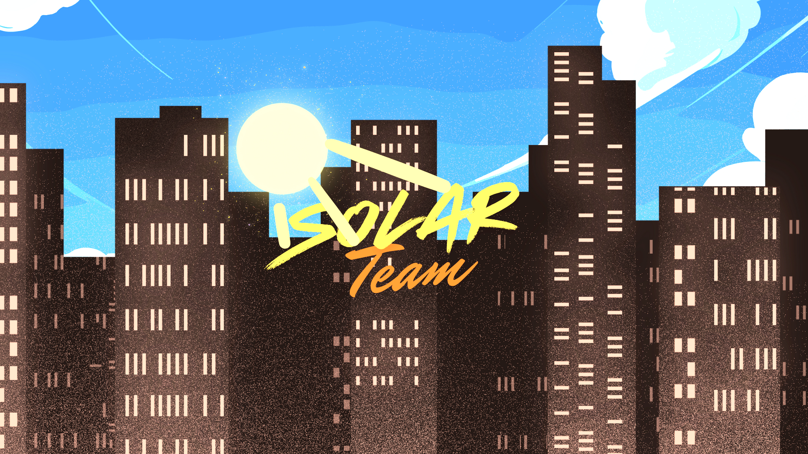

24/7
Activitate constantă în comunitate
Comunitate activă 24/7
Un mediu bine organizat, stabil și plin de activitate, construit pentru jucători care vor calitate, respect și rol corect.
Activitate constantă în comunitate
Membri activi pe server
Evenimente organizate în ultimul an
Experiență pregătită pentru jucători serioși
Știri / Noutăți
Am actualizat regulile pentru a oferi mai multă claritate în fața conflictelor și a situațiilor de roleplay.
24 iunie 2026Pregătim un eveniment special pentru jucătorii activi, cu premii și provocări exclusive.
12 iulie 2026Căutăm moderatori și helperi motivați. Aplică prin pagina de staff și așteaptă procesul de selecție.
3 iulie 2026Acest website este construit pentru a fi clar, responsive și sigur la nivel de navigare și trimitere a formularelor.
Servere bine organizate, evenimente regulate și un staff dedicat pentru o experiență bună.
Construim un mediu în care respectul, seriozitatea și distracția merg mână în mână.
Explorează regulile, modul de joc și resursele disposable pentru a te alătura comunității.
Istoricul SolarCity
SolarCity a început în 2025 ca un proiect construit din pasiune pentru Minecraft și pentru o experiență Roleplay diferită. În cei doi ani care au urmat, echipa a crescut, proiectul s-a reorganizat și a intrat într-o fază mai stabilă.
La începutul anului 2025, SolarCity a pornit ca un proiect ambițios, creat din pasiunea pentru Minecraft și dorința de a oferi o experiență Roleplay diferită față de serverele existente.
Primele zile au fost dedicate dezvoltării infrastructurii, configurării sistemelor și construirii unei baze solide pentru viitorul comunității.
Odată cu apropierea primei lansări, echipa tehnică s-a extins pentru a accelera dezvoltarea serverului.
În această perioadă au fost implementate numeroase sisteme Roleplay, optimizări și funcționalități care au definit direcția proiectului.
După o perioadă de reorganizare și dezvoltare continuă, SolarCity a intrat într-o nouă etapă.
Accentul principal a fost pus pe rescrierea sistemelor existente, îmbunătățirea performanței și pregătirea unei experiențe mult mai stabile pentru comunitate.
În vara anului 2026, SolarCity a revenit cu o echipă consolidată și cu planuri mari pentru viitor.
Au fost dezvoltate noi funcționalități, optimizate sistemele existente și pregătite evenimente dedicate comunității.
În paralel cu dezvoltarea serverului, echipa SolarCity a organizat primul mare eveniment al comunității.
🎬 Fabian (NitroFlow)
El a coordonat organizarea evenimentului Solar Beach Please, unul dintre cele mai importante proiecte media ale comunității în 2026.
Parcursul lui Fabian în SolarCity demonstrează implicarea constantă în dezvoltarea proiectului.
Rolul său a evoluat de la implicare în moderare până la coordonarea unui proiect major al comunității.
Între **2025 și 2026**, **SolarCity** a trecut prin schimbări, reorganizări și extinderi ale echipei. Fiecare membru care a contribuit a pus amprenta asupra comunității, transformând o idee într-un proiect cu identitate proprie.
Astăzi, SolarCity continuă să se dezvolte cu aceeași misiune:
„Construim mai mult decât un server. Construim o comunitate în care fiecare jucător își poate scrie propria poveste.”
© 2025 - 2026 | SolarCity Development Team
Powered by Passion • Innovation • Community

Suntem gata să te primim în comunitate. Verifică regulamentul, explorează resursele și intră în joc cu încredere.
Accesează regulamentul